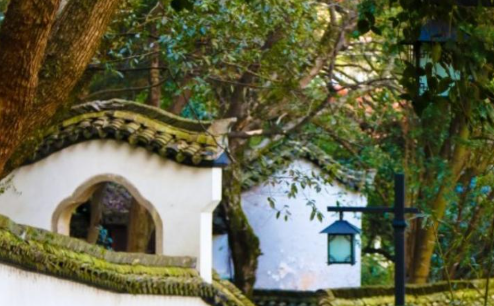

风景名胜
-
杭州野生动物世界
畅游奇妙动物世界，杭州野生动物园位于杭州市富阳区九龙大道1号。走进杭州野生动物世界，和动物们亲密接触，动物园的面积超大，而且这里的珍稀动物种类很多，很适合带娃游玩。
-
富春桃源景区
风景优美的富春桃源，是富阳的C位景区，位于杭州市富阳区胥口镇上练村。景区拥富阳区最大的岩石岭水库，亚太第一大洞厅——九霄碧云洞，还有百余亩充满生机的野生槠树林，一睹山水美如画的风光。
-
黄公望隐居地景区
竹林深处的黄公望隐居地，位于杭州市富阳市东洲街道黄公望村。村子坐落在秀丽的富春江畔，背靠郁郁葱葱的青山，走进风景如画的隐居地，环境清幽，很有古代隐士居住的感觉，还可以了解黄公望的一生。
-
龙门古镇景区
古朴宁静的龙门古镇，位于杭州市富阳区龙门镇中龙线。富春江畔的龙门古镇以独特的明清古建筑群而闻名，古色古香的建筑，而且孙权的后裔都居住在这，在这里可以感受小城烟火的气息。
-

鹳山景区
鼎鼎有名的文化名山鹳山，位于杭州市富阳区鹳山路2号。鹳山景区三面环水，临富春江而立，在山中漫步，可以邂逅众多古迹，明代古城墙、东门渡、春江第一楼以及严子陵垂钓处等，欣赏古今山水交融的绝美。
-
通天飞瀑风景区
通天飞瀑原名“葛仙洞”，因东晋葛洪在此炼丹而得名，位于杭州市富阳市胥口镇岩石岭（距富阳市区35公里）。有着壮美的自然风光，洞中瀑布层层叠叠，是华东地区独一无二的“洞中飞瀑群”。